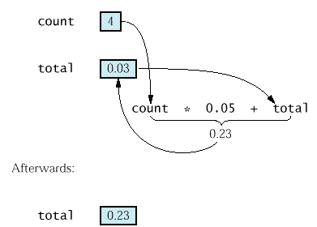

План:
Числени типове данни
Вход и изход
Операция присвояване
Аритметика
Константи
Форматиране на изхода
// coins1.cpp
#include <iostream> using namespace std; int main() { int pennies = 8; int dimes = 4; /* променлива dimes, константа 4 */ int quarters = 3; double total = pennies * 0.01 + dimes * 0.10 + quarters * 0.25; /* обща стойност на монетите */ cout << "Total value = " << total << "\n"; return 0; }
* Типът "цяло число" (int) задава цели
числа без дробна част.
* Числата от тип "плаваща запетая" (double) имат
десетичната
точка (Decimal
separator).
* Записване на числа с плаваща запетая: 1.2; 0.001; -0.12;
1E-2; 13.01E2; -2.9e-2; и т.н.
* Променливите са места в паметта, която могат съхраняват
стойности от даден тип.
* Правила за именуване (символични имена, идентификатори):
* Всяка променлива има:
* В оператора за дефиниране на променлива
int dimes = 4;
типът на променливата е int, името е dimes и
стойността е 4.
* Неопределена стойност на променлива, когато променливата се
дефинира без задаване на начална стойност (без инициализация).
* За действие умножение се използва * (не точка или х).
* Оператор за изход, обекта "екран" (cout):
cout << "Total value =
";
/* извежда низ */
cout <<
total; /* извежда
стойност на променлива */
cout <<
"\n"; /* специален символ за край на ред */
* Изход на низове на български език -
неопределени, да се избягват.
* Коментар - не се обработва от компилатора:
/* коментар
между
знаците за начало и край на коментар */
// коментар
-
до края на реда.
// coins2.cpp
#include <iostream> using namespace std; int main() { cout << "How many pennies do you have? "; int pennies; cin >> pennies; cout << "How many nickels do you have? "; int nickels; cin >> nickels;
cout << "How many dimes do you have? "; int dimes; cin >> dimes; cout << "How many quarters do you have? "; int quarters; cin >> quarters; double total = pennies * 0.01 + nickels * 0.05 + dimes * 0.10 + quarters * 0.25; /* total value of the coins */ cout << "Total value = " << total << "\n"; return 0; }
* Четене на цели и дробни числа (десетични
дроби).
* Грешки при вход - състояния на
входния поток: нормално и "грешка".
* Въвеждане на повече от 1 число с
един оператор за вход.
cin >> pennies >> nickels
>> dimes >> quarters;
(един оператор за вход, състоящ се от 4 операции входен поток)
|
|
// coins3.cpp* Операторът присвоява стойността на израза отдясно на променливата от лявата страна:
#include <iostream>
using namespace std;
int main()
{ cout << "How many pennies do you have? ";
int count; // дефиниция на променливата count
cin >> count;
double total = count * 0.01; // дефиниция на променливата total
cout << "How many nickels do you have? ";
cin >> count;
total = count * 0.05 + total; // оператор за присвояване
// промяна на стойността на променливата total cout << "How many dimes do you have? ";
cin >> count;
total = count * 0.10 + total; // оператор за присвояване
cout << "How many quarters do you have? ";
cin >> count;
total = count * 0.25 + total; // оператор за присвояване cout << "Total value = " << total << "\n"; return 0; }
total = count * 0.05 + total;
double total = count * 0.01; // оператор за дефиниране на променлива- без инициализация (без задаване на начална стойност):
int count; // оператор за дефиниране на променлива* Операция присвояване - отбелязва се със знака за равенство (=).
| Операция | символ | тип на аргументите | математика |
|
| събиране | + | a+b | int, double | a + b |
| изваждане | - | a-b | int, double | a - b |
| умножение | * | a*b | int, double | ab |
| деление | / | a/b | int, double, b не е 0 | a/b |
| остатък от деление | % | a%b | int, b не е 0 | a mod b |
* Приоритети - както в математиката (най-напред се извършват
действия *, / и % и след тях + и -)
* Използване на скоби за промяна на реда на изпълнение на
аритметичните операции
Пример:
(a+b)/2 сборът на числата a и b
се дели на 2;
a+b/2 числото a се събира с
половинката на числото b.
* Аргументна зависимост - действието на операцията зависи от
типа на аргументите.
Примери:
|
|
|
// coins4.cpp* Аритметични функции.
#include <iostream> using namespace std; int main() { cout << "How many pennies do you have? "; int pennies; cin >> pennies; cout << "How many nickels do you have? "; int nickels; cin >> nickels;
cout << "How many dimes do you have? "; int dimes; cin >> dimes; cout << "How many quarters do you have? "; int quarters; cin >> quarters; int value = pennies + 5 * nickels + 10 * dimes + 25 * quarters; int dollar = value / 100; // целочислено деление int cents = value % 100; // остатък от целочислено деление cout << "Total value = " << dollar << " dollar and " << cents << " cents\n"; return 0; }
Пример
Стойност
sqrt(64) 8.0
pow(3, 2) 9.0
sin(0) 0.0
cos(0) 1.0
tan(0) 0.0
exp(0) 1.0
log(1) 0.0
log10(100) 2.0
ceil(10.1) 11.0
floor(10.8) 10.0
fabs(-3.5) 3.5
// volume1.cppКакво е значението на числото 0.355? - 1 кутия съдържа 12 унции = 0.355 литра.
#include <iostream> using namespace std;
int main() { double bottles; cout << "How many 2-liter bottles do you have? "; cin >> bottles;
double cans; cout << "How many cans do you have? ";
cin >> cans;
double total = bottles * 2 + cans * 0.355; cout << "The total volume is " << total << " liter.\n"; return 0;
}
// volume2.cpp
#include <iostream>
using namespace std;
int main()
{ const double BOTTLE_VOLUME = 2.0;
const double CAN_VOLUME = 0.355;
double bottles;
cout << "How many" << BOTTLE_VOLUME << "-liter bottles do you have? "; cin >> bottles; double cans; cout << "How many cans do you have? "; cin >> cans; double total = bottles * BOTTLE_VOLUME + cans * CAN_VOLUME; cout << "The total volume is " << total << " liter.\n"; return 0; }
** Форматиране на изхода.
Пример: Отпечатване на брой
монети от дадения вид и тяхната стойност.
* Когато просто се отпечатват стойностите на променливите, не се
получава подредена таблица (form1.cpp).
cout << pennies << " "
<< pennies * 0.01 << "\n";
cout << nickels <<
" " << nickels * 0.05 << "\n";
cout << dimes << " "
<< dimes * 0.10 << "\n";
cout << quarters << " "
<< quarters * 0.25 << "\n";
| 1 0.01 12 0.6 4 0.4 120 30 |
*
Използване на манипулатори:
- setw задава
ширината на следващото изходно поле;
cout << setw(8);
- setprecision задава
(максимален) брой на цифрите след десетичната точка;
cout << setprecision(2);
- fixed фиксира
броя на цифрите след десетичната точка.
cout << fixed;
* Манипулаторите са дефинирани в заглавния файл iomanip.h, т.е. за
да ги използваме, трябва да имаме #include
<iomanip>.
Така изглежда частта от програмата, която отпечатва подредена
таблица (form2.cpp):
cout << fixed <<
setprecision(2);
cout <<setw(8)<< pennies
<<" "<< pennies*0.01 << "\n";
cout <<setw(8)<< nickels
<<" "<< nickels*0.05 << "\n";
cout <<setw(8)<< dimes
<<" "<< dimes*0.10 << "\n";
cout <<setw(8)<< quarters
<<" "<< quarters*0.25 << "\n";
|
1 0.01 12 0.60 4 0.40 120 30.00 |